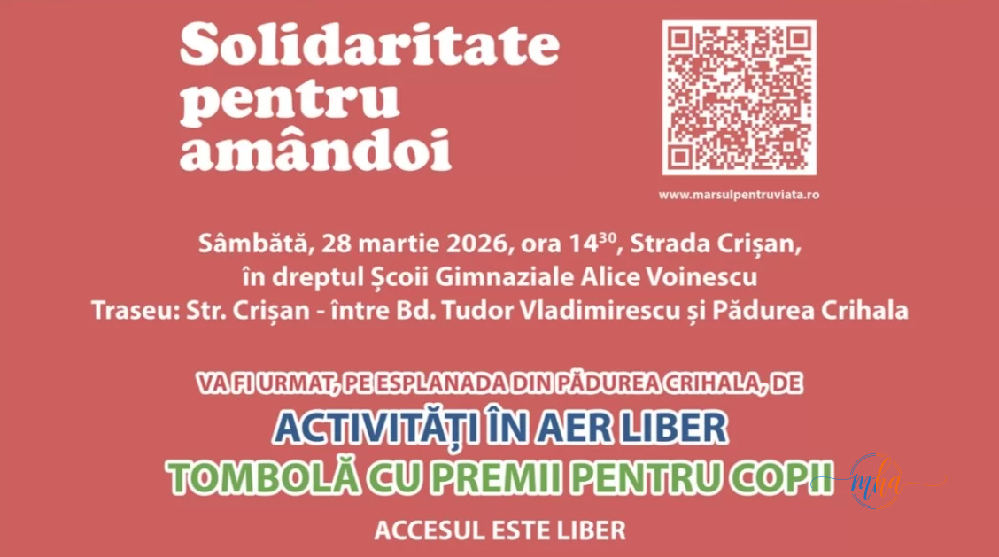

Municipiul Drobeta-Turnu Severin va găzdui sâmbătă, 28 martie 2026, o nouă ediție a „Marșului pentru Viață" — unul dintre cele mai importante evenimente dedicate promovării valorilor familiale și susținerii vieții din România. Ajuns la cea de-a 16-a ediție, marșul reunește anual mii de oameni în zeci de orașe din țară, iar Drobeta-Turnu Severin se alătură din nou acestei inițiative naționale cu o puternică amprentă comunitară.
Organizatorii estimează o participare de aproximativ 300 de persoane, în special tineri, care vor transmite un mesaj clar despre importanța familiei, a responsabilității sociale și a sprijinului pentru cei mai vulnerabili — copiii.
📋 Detalii eveniment — Marșul pentru Viață, Drobeta 2026
| Data | Sâmbătă, 28 martie 2026 |
| Ora de start | 14:30 |
| Punct de adunare | Strada Crișan, în dreptul Școlii Gimnaziale Alice Voinescu |
| Traseu | Str. Crișan — între Bd. Tudor Vladimirescu și Pădurea Crihala |
| Participanți estimați | ~300 persoane |
| Acces | Liber, pentru toți |
| Ediție | A 16-a ediție națională |
Program complet: marș, activități în aer liber și tombolă pentru copii
Evenimentul va începe la ora 14:00, când participanții se vor reuni în zona de promenadă Crișan, în apropierea Liceului de Artă „I. Șt. Paulian". La ora 14:30, aceștia vor porni în marș pe un traseu stabilit de-a lungul Străzii Crișan, între Bulevardul Tudor Vladimirescu și Pădurea Crihala.
Punctul de adunare oficial este în dreptul Școlii Gimnaziale Alice Voinescu, de pe Strada Crișan — un reper cunoscut severnilor, ușor de găsit pentru toți participanții.
După finalizarea marșului, evenimentul va continua pe esplanada din Pădurea Crihala, unde sunt pregătite:
- Activități în aer liber pentru toate vârstele
- Tombolă cu premii pentru copii

Afișul oficial al evenimentului — „Solidaritate pentru amândoi", Marșul pentru Viață 2026 | Foto: marsulpentruviata.ro
„Solidaritate pentru amândoi" — mesajul ediției 2026
Tema ediției din acest an este „Solidaritate pentru amândoi" — un mesaj care subliniază că susținerea vieții înseamnă grija atât pentru mamă, cât și pentru copil, atât pentru familie, cât și pentru comunitate. Organizatorii transmit că acțiunea are scopul de a aduce în prim-plan importanța familiei, a responsabilității sociale și a sprijinului pentru copii.
„Evenimentul este deschis tuturor celor care doresc să participe, în mod pașnic și responsabil, la această inițiativă dedicată comunității." — Organizatorii Marșului pentru Viață
Eveniment național, cu impact local puternic
„Marșul pentru Viață" este o mișcare civică de amploare națională, organizată anual în zeci de orașe din România. La nivel national, sute de mii de oameni au participat de-a lungul celor 16 ediții la aceste marșuri, transmițând un mesaj consistent despre valorile care stau la baza unei societăți sănătoase: familia, viața, solidaritatea și responsabilitatea față de generațiile viitoare.
La Drobeta-Turnu Severin, evenimentul se bucură an de an de un număr crescând de participanți, semn că mesajul rezonează tot mai mult în comunitatea mehedințeană. Accesul este liber, iar organizatorii invită toți cetățenii — indiferent de vârstă — să li se alăture sâmbătă pe Strada Crișan.
Mai multe informații despre evenimentul național găsiți pe site-ul oficial: www.marsulpentruviata.ro